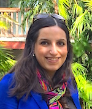

Email: nilizadeh<at>cs<dot>ucsb<dot>edu
Office: Harold Frank Hall, Room 2114
I am currently a postdoctoral researcher at Security Group (seclab) at UCSB. I received my Ph.D. in Security Informatics from IUB in September 2014. Following my doctorate, I joint the Center for Complex Networks and Systems Research (CNetS) and Privacy Lab at IUB as a postdoctoral researcher.
I am interested in topics intersecting ‘Security and Privacy’ and ‘Network Science’. I am particularly interested in Security and Privacy in Online Social Networks and Peer-to-Peer Networks, Privacy and Anonymity in Big Data, Applied Cryptography, Applied Machine Learning and Data Mining.
Aug 2015: Joint Seclab at UCSB
Jul 2015: Joint the Program Committee of WWW 2016
Jul 2015: Joint the Program Committee of PETS 2016
Jun 2015: Talked about "Twitter's Reaction on Revelations about Government's Internet Surveillance program" at SAT held with PETS 2015
Jul 2014: Our paper "Community-enhanced de-anonymization of Online Social Networks" got accepted to ACM CCS 2014.
Oct 2014: Joint Privacy Lab and CNET at IUB as a postdoctoral researcher
Jun 2014: Successfully defended my Ph.D. dissertation
Ph.D. in Security Informatics, Sep 2014
School of Informatics and Computing
Indiana Univeristy Bloomington
Dissertation: Privacy-aware Decentralized Architectures for Socially Networked Systems
Adviser: Prof. Apu Kapadia
M.Sc. in Information Security, Feb 2007
Computer Engineering and Information Technology
Amirkabir University of Technology
Thesis title: Linear approximations Representation of Block Ciphers
Adviser: Prof. Babak Sadeghian
B.Sc. in Computer Engineering, Jun 2004
Department of Computer Engineering
Islamic Azad University at Najafabad
Shirin Nilizadeh, Apu Kapadia, and Yong-Yeol Ahn, "Community-Enhanced De-anonymization of Online Social Networks," In Proceedings of 21st ACM Conference on Computer and Communications Security (CCS ’14), Arizona, USA, 2014. (Acceptance rate: 19%) [bibtex][Slides]
Shirin Nilizadeh, "Privacy-aware Decentralized Architectures for Socially Networked Systems," Ph.D. Thesis, Indiana University Bloomington, Semtember 2014. [bibtex]
Vaibhav Garg and Shirin Nilizadeh, "Craigslist Scams and Community Composition: Investigating Online Fraud Victimization," IEEE International Workshop on Cyber Crime (IWCC 2013), San Francisco, USA, May, 2013. [bibtex]
Shirin Nilizadeh, Sonia Jahid, Prateek Mittal, Nikita Borisov, and Apu Kapadia, "Cachet: A Decentralized Architecture for Privacy Preserving Social Networking with Caching," In Proceedings of 8th ACM International Conference on emerging Networking EXperiments and Technologies (ACM CoNEXT), Nice, France, Dec. 2012. [bibtex][Slides]
Sonia Jahid, Shirin Nilizadeh, Prateek Mittal, Nikita Borisov, and Apu Kapadia, "DECENT: A Decentralized Architecture for Enforcing Privacy in Online Social Networks," The 4th IEEE International Workshop on Security and Social Networking (SESOC '12), Lugano, Switzerland, Mar 19, 2012. (Acceptance rate: 29%) [bibtex][Slides]
Shirin Nilizadeh, Naveed Alam, Nathaniel Husted, and Apu Kapadia, "Pythia: A Privacy Aware, Peer-to-Peer Network for Social Search," In Proceedings of 2011 ACM Workshop on Privacy in the Electronic Society (WPES '11), pp. 43--48, Chicago, Illinois, October 17, 2011. (Acceptance rate: 28%) [bibtex][Slides]
Shirin Nilizadeh, Naveed Alam, Nathaniel Husted, and Apu Kapadia. "Pythia: A Privacy Aware, Peer-to-Peer Network for Social Search," Technical Report TR687, Indiana University Bloomington, Oct. 2010. [bibtex][iu-link]
Shirin Nilizadeh, and Babak Sadeghiyan, "Linear Approximations Representation of Moamagar Block Cipher," 12th International Conference on Computer Science (CSICC), Iran, 2007.
“Twitter’s Reaction on Revelations about Government’s Internet Surveillance program,” The Workshop on Surveillance & Technology (SAT) held with the Privacy Enhancing Technologies Symposium (PETS), June 29th, 2015. [Slides]
“Community-Enhanced De-anonymization of Online Social Networks,” The 21st ACM Conference on Computer and Communications Security (CCS’14), Scottsdale, Arizona, USA, November 3-7, 2014. [Slides]
“Privacy-aware Decentralized Architectures for Socially Networked Systems,” Student Knowledge Exchange on Technical Aspects of Privacy, University of Notre Dame, September 2013. [Slides]
“Pythia: A Privacy Aware, Peer-to-Peer Network for Social Search,” 2011 ACM Workshop on Privacy in the Electronic Society (WPES ’11), Chicago, Illinois, October 2011. [Slides]
“Linear Approximations Representation of Moamagar Block Cipher,” 12th International Conference on Computer Science (CSICC), Shahid Beheshti University (SBU), Tehran, Iran, February 2007. [Slides]
Shirin Nilizadeh, "Community-enhanced De-anonymization of Social Networks," Women in Cyber Security, April 2014. [pdf]
Shirin Nilizadeh, Sonia Jahid, Prateek Mittal, Nikita Borisov and Apu Kapadia, "Cachet: A Decentralized Architecture for Privacy Preserving Social Networking with Caching," Grace Hopper Celebration of Women in Computing, 2012.[pdf]
Shirin Nilizadeh, Sonia Jahid, Prateek Mittal, Nikita Borisov and Apu Kapadia, "DECENT: A Decentralized Architecture for Enforcing Privacy in Online Sociclai Networks," Indiana Celebration of Women in Computing (InWIC), 2012. [pdf] [Winner of Best Graduate Poster Award]
Azadeh Nematzadeh and Shirin Nilizadeh, "Classification Approach toward Craigslist Scam Detection," Graduate cohort workshop, Boston, 2011.
Shirin Nilizadeh, Naveed Alam, Apu Kapadia, "Peer-to-Peer Aardvark," Indiana Celebration of Women in Computing (InWIC), 2010. [pdf] [Runner up for the Best Graduate Poster Award]